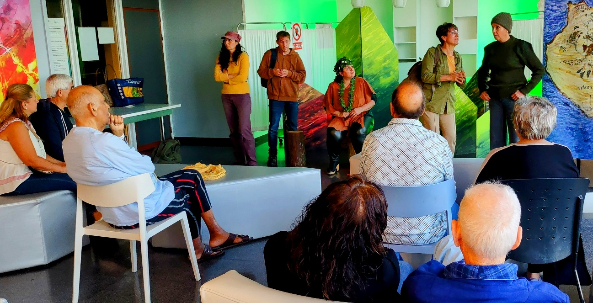
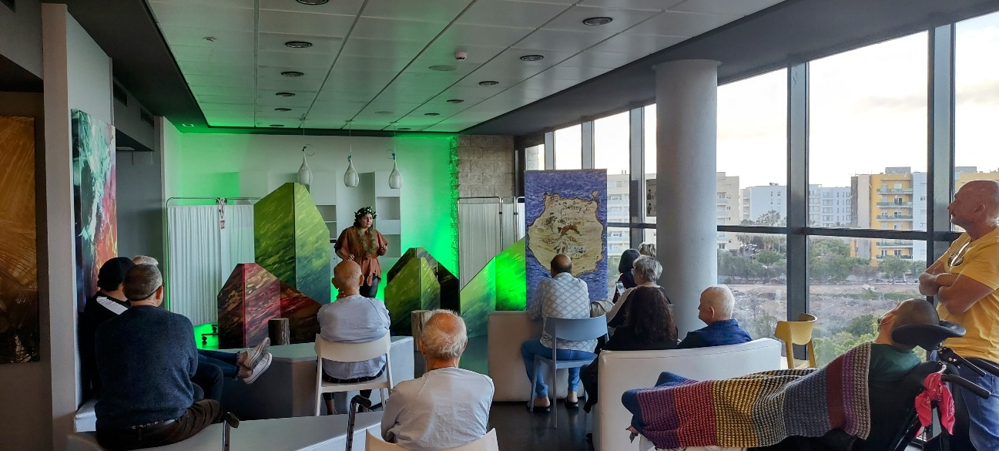
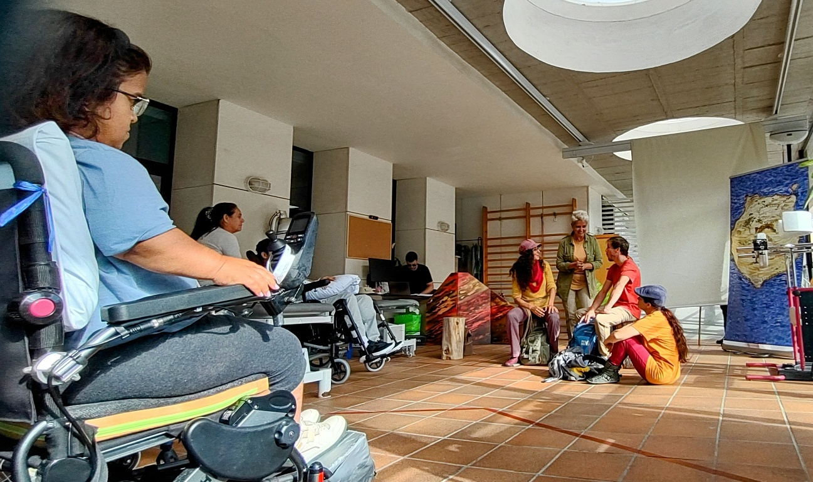
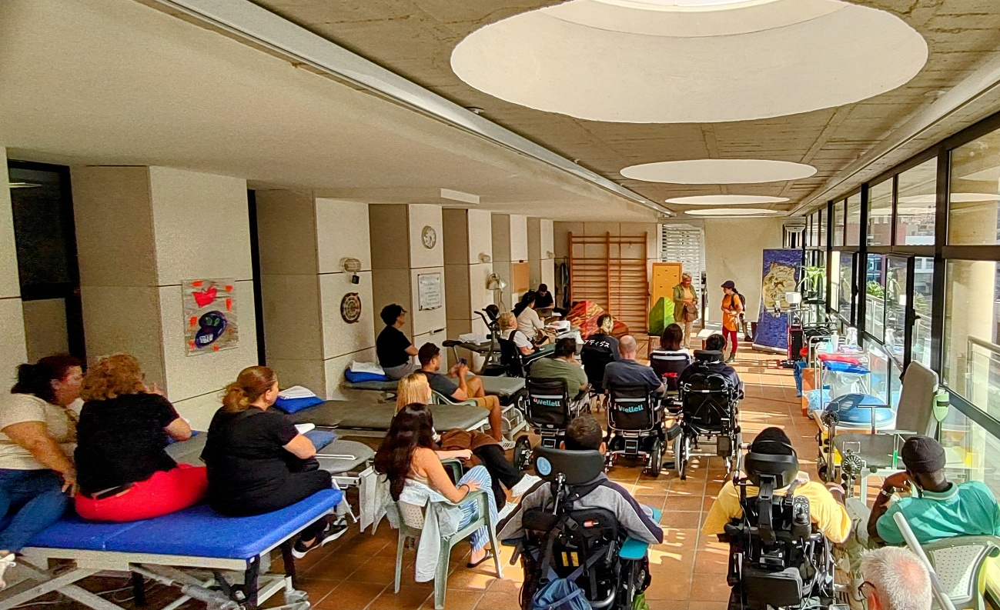
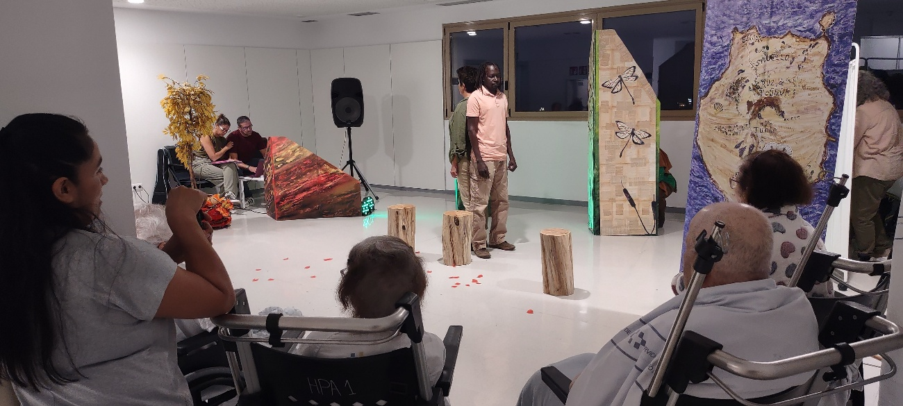
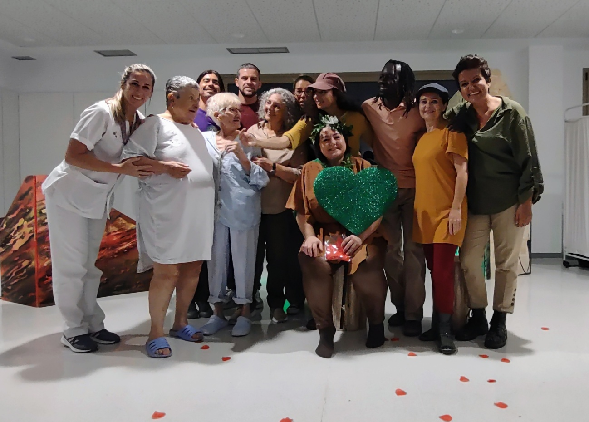
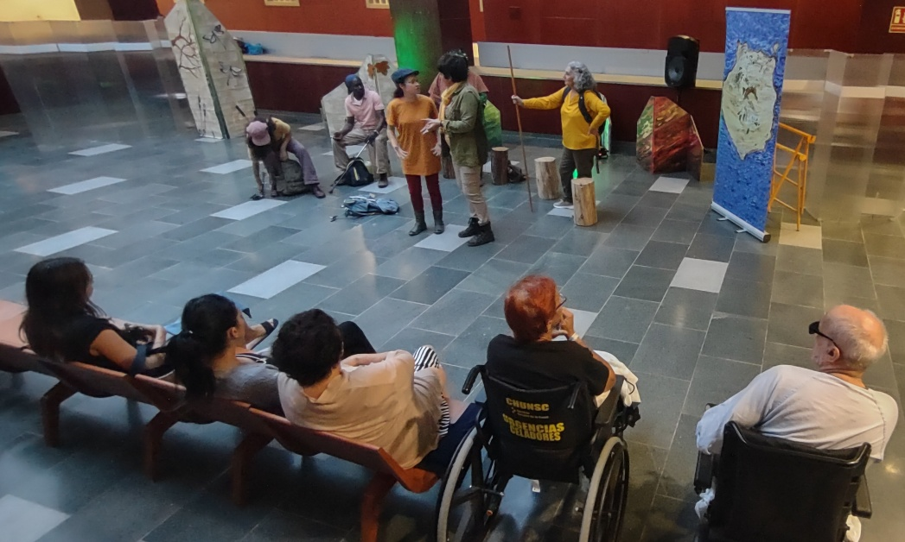
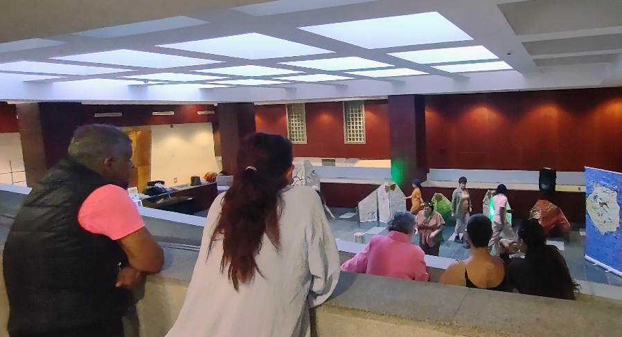
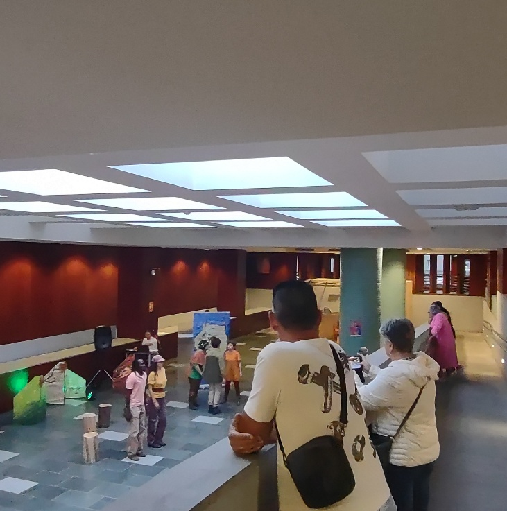

TeHospiCan
Teatro en los hospitales de Canarias
Promotora: Asociación artística sociocultural sin ánimo de lucro Anda que Anda, Las Palmas de Gran Canaria.
Partner: Los 14 Hospitales Públicos de Canarias.
Objetivos: Utilizar el teatro como herramienta para humanizar los hospitales, aliviando la estancia de pacientes, familiares, amigos y también el ánimo del personal hospitalario que trabaja cotidianamente en condiciones de estrés laborales. «Si las terapias médicas ayudan al cuerpo, el arte regenera el alma de las personas, y crear un estado de ánimo alegre y relajado ayuda en la curación».
Propuesta: Organizar espectáculos de teatro amateur en espacios idóneos de los Hospitales canarios.
Protocolo
La Asociación Anda que Anda propone y organiza TeHospiCan, Proyecto pionero de Teatro en los Hospitales de Canarias, en colaboración con los mismos Hospitales y el Gobierno de Canarias.
La Asociación se hace cargo de la selección de los espectáculos que podrán ser de producción propia o de otras compañías de teatro amateur. Los espectáculos se van a representar en espacios idóneos de las diferentes plantas de los Hospitales canarios.
Las fechas, los horarios y las salas serán establecidas, al principio del año, en acuerdo con la dirección de cada Hospital. El propósito es fijar cuatro fechas al año en cada Hospital. En cada fecha se puede representar un solo espectáculo o más de uno dependiendo si hay posibilidades de horario.
La Asociación Anda que Anda o la compañía productora del espectáculo se ocupa del transporte, carga y descarga de la eventual escenografía, realización del cartel de la obra.
El Hospital se ocupa de: pedir la colaboración del personal médico, paramédico y de los trabajadores en general; avisar los pacientes y llevar a las salas lo que no son autónomos en las fechas de los espectáculos.
Las personas referentes del proyecto dentro de cada hospital se comprometen a tener como interlocutor únicamente a la asociación Anda que Anda.
El Proyecto no comporta coste para los hospitales.
Los primeros hospitales que han beneficiado ya del proyecto son los hospitales de la isla de Gran Canaria: Hospital Universitario Doctor Negrín, Hospital Insular, Hospital Polivalente- anexo Juan Carlos I.
En Tenerife: Hospital Universitario de Nuestra Señora de la Candelaria en Santa Cruz de Tenerife.

Hospital Universitario Doctor Negrín, Las Palmas: 6ª planta, 14 marzo 2025.



Hospital Insular, Las Palmas: 26 mayo 2025., terraza 5 Planta Medular.

Hospital Polivalente, anexo Juan Carlos I, Las Palmas: 26 octubre 2025.


Hospital de Nuestra Señora de la Candelaria, Santa Cruz de Tenerife: 30 noviembre 2025.

